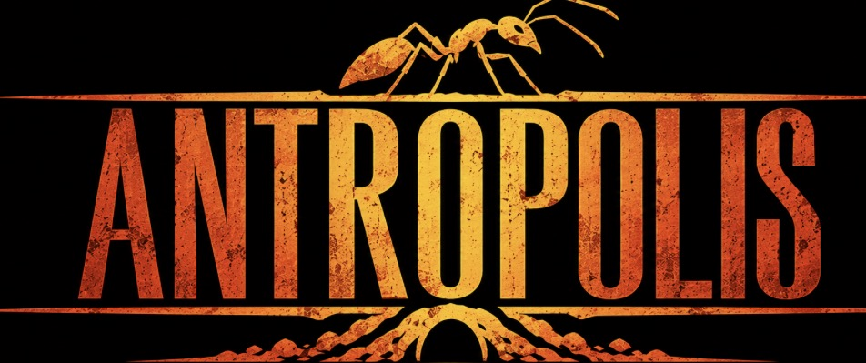

0ants
0food · 0 jelly
Queen’s health
Next egg
Egg chances
Next nest
Build and upgrade
Quests
Heroes
Your ants and queen
Tap a card to level up with royal jelly. Earn jelly from waves, bosses, finds and daily tasks.

Tap a card to level up with royal jelly. Earn jelly from waves, bosses, finds and daily tasks.
From one queen and a handful of ants, you built a Metropolis under the grass. The tunnels never sleep, and the whole meadow knows your name.
You are now a Founder. Keep playing, master every ant class, or start a Royal Flight and found a new colony.